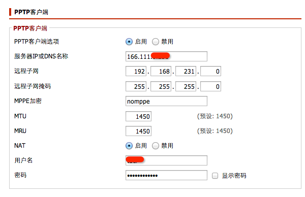
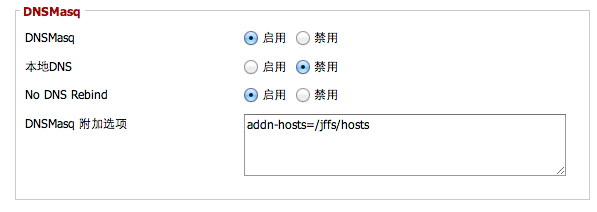
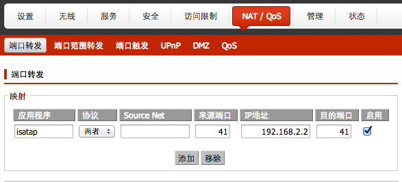

之前该路由器一直用的是Open-WRT的固件，但是时间长了之后，总是会遇到莫名其妙的Wifi掉线问题，VPN崩掉的问题，可能是因为一直使用开发版的固件的缘故吧。但是稳定版的Backfire固件似乎有问题，我每刷必成砖，每次都要ttl进行修复。好了闲话少提，这次主要记录的是将该路由器刷成Buffalo官方提供的Professional版本的固件，并且配置使用的过程。
一、刷机
首先到这里下载官方的DD-WRT固件。由于之前路由器已经刷了Open-WRT，而官方的固件是有加密的，因此不能使用
mtd -r write firmware.bin firmware
这样的方式直接将下载的固件刷入路由器。参考Wiki的做法是采用TFTP的方式。
该路由器的UBOOT Bootloader在刚启动时，有4s的时间接受TFTP方式上传固件。在这段时间里面，路由器不可ping也没有arp广播，但是其IP固定为192.168.11.1，arp固定为02-AA-BB-CC-DD-1A。刷机方式如下：
- 将路由器的电源拔掉，将四个LAN口中最靠近WAN口的一个连接到计算机的网口上。
- 将计算机的IP地址设置为
192.168.11.2，子网掩码为255.255.255.0。 - 设置固定arp，如在OS X下为：
sudo arp -s 192.168.11.1 02:aa:bb:cc:dd:1a ifscope en0
- 在终端下，输入
tftp 192.168.11.1
tftp> verbose
tftp> binary
tftp> trace
tftp> rexmt 1
tftp> timeout 60
tftp> put wzrg300nh-firmware.enc
- 输入到最后一句的时候，先不要按下Return，路由器加电，观察交换机的灯，等灯亮后约2秒钟，按下Return键，将固件上传到路由器。这个时间不太好把握，可能需要多实验几次。另外，最好在路由器和电脑之间加一个小交换机，这样计算机不会频繁的进行网卡通断的切换，成功的概率大一些。
- 等固件上传完毕后，路由器的红灯会闪，表示正在刷机，完成后会自动重新启动。
二、配置PPTP VPN客户端
校园网对于出校访问有流量限制，需要帐号登录出校才能正常使用。为了实现免登录，也为了节省流量，采取路由器上通过pptp client连接某校内VPN，然后出校流量走VPN的方式。
在ddwrt的web设置界面，选择“服务”->“VPN”->“PPTP客户端”

首先启用PPTP客户端，填入服务器的IP，远程子网与远程子网掩码可以通过先在电脑上登录一下VPN来获得。
MPPE的选项，根据实际情况来填写，如果没有的话，就写nomppe，如果有的话，填写mppe required。如果连接的是windows VPN服务器，可能需要填写mppe required,no40,no56,stateless或者是mppe required,no40,no56,stateful。
保存并且应用之后重启路由，ssh到路由器上就会发现多了一个ppp0的interface。然后需要将默认的网关设置为VPN。
- 首先需要启用jffs分区，因为dd-wrt的分区是不可写的，只有启用了jffs分区，才可以将自己的脚本保存在上面。
- ssh登录路由器，使用
rc_startup来启动一个控制启动脚本，该脚本在系统启动时候自动执行，功能是将/jffs/etc/config/目录下所有后缀名为.startup的脚本都执行一遍。因此将来如果还有需要开机启动的脚本，直接放入/jffs/etc/config中并且以.startup为后缀名即可。
nvram set rc_startup="sh /jffs/etc/config/my_startup.sh"
nvram commit
- 确保目录存在
mkdir -p /jffs/etc/config
- 创建
my_startup.sh启动脚本：
vi /jffs/etc/config/my_startup.sh
- 输入下面的内容
#!/bin/sh
for I in `/bin/ls /jffs/etc/config/*.startup`
do
sh $I&
done
- 调整权限
chmod 700 /jffs/etc/config/my_startup.sh
- 然后创建VPN的脚本
vi /jffs/etc/config/vpn.startup
- 输入如下内容
#!/bin/sh
sleep 90
OLDGW=$(nvram get wan_gateway)
VPNSRV=$(nvram get pptpd_client_srvip)
PPTPDEV=ppp0
VPNGW=$(ifconfig $PPTPDEV | grep -Eo "P-t-P:([0-9.]+)" | cut -d: -f2)
route add -host $VPNSRV gw $OLDGW
route del default gw $OLDGW
route add default gw $VPNGW
- 调整权限
chmod 700 /jffs/etc/config/vpn.startup
- 将校内的网段用route命令使之走校园网的网关，此处不再详述。
- 重启之后，90s网络稳定后，即可通过VPN走校外的流量。
三、配置额外的DNSMasq选项
由于Apple在中国地区没有服务器，所以App Store的下载速度一直让人诟病。解决方案就是强制指定App Store的服务器为香港或者澳门、台湾的服务器。一般有两种方法：
- 修改DNS。采用特定的DNS，该DNS对于App Store的访问特别做了优化，可以将App Store的地址解析为你的网络访问最快的地址。优点：操作简单。缺点：所有的解析都是通过修改后的DNS进行，因此对于其他的网络，特别是本地的一些网络（比如笔者所在的教育网）的解析有时候会出错，造成访问网络缓慢。
- 修改hosts。将App Store的条目写入hosts中，这样不需要修改dns，即可以达到加速效果。优点：不修改dns，不影响其他网络访问速度。缺点：麻烦，需要手动测试最快的app store地址，而且未越狱的iPhone没法修改hosts。
为了方便路由器子网内设备（一台Macbook Pro，一台iPhone）能够零配置加速App Store的访问，我采取在路由器上附加hosts的方法。这样的话，路由器子网下面所有的设备，都能够不用改配置就可以加速App Store的访问，并且不影响对其他网址的解析。方法如下：
- 将包含App Store加速的hosts文件通过scp的方式复制到路由器上，关于如何获得该hosts文件，这里不详细展开，感兴趣的同学，可以参考这里。我们假设将该文件放在了
/jffs/etc/hosts。 - 在DD-WRT的配置界面，选择“服务”->“DNSMasq”，在“DNSMasq附加选项”中填入"addn-hosts=/jffs/etc/hosts"（不加引号）保存应用即可。

四、Hack IPv6 Isatap
在前面的文章中，我提到过，由于学校给紫荆地区的IPv6强行加上了认证，且认证服务器经常崩溃，导致原生IPv6使用十分不便，因此，我采用走ISATAP隧道的方法来绕过认证。但是，学校的隧道给分配的地址是/64的，无法进一步分配，因此，当计算机退到路由器的内网之后，就没法使用ISATAP隧道了。
考虑到局域网内，只有一台主机需要使用IPv6，因此对ISATAP进行了hack，由于ISATAP和6to4协议都是使用41端口，因此，我把来自外网的41端口的数据都转发给我的主机。注意要首先给主机一个固定的IP分配。配置图如下：

然后在计算机上执行下面的脚本，即可。
#!/bin/sh
LAN_IP=`/sbin/ifconfig en0 | grep inet | grep -v inet6 | awk '{print $2}'`
WAN_IP=59.66.210.123 # replace with your wan ip
# just for Tsinghua's ISATAP router
/sbin/ifconfig gif0 tunnel $LAN_IP 59.66.4.50
/sbin/ifconfig gif0 inet6 2001:da8:200:900e:0:5efe:$WAN_IP prefixlen 64
/sbin/ifconfig gif0 up
/sbin/route delete -inet6 default
/sbin/route add -inet6 default 2001:da8:200:900e::1
注意：将WAN_IP替换为你的WAN IP，该脚本示例为使用清华大学的ISATAP隧道路由器。